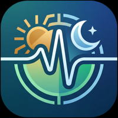

Making software that lasts.
Purplelink LLC is a one-person software studio in Atlanta, Georgia, founded in 2026 by Benjamin Ampel. The studio ships native macOS and iOS apps with privacy as an architectural constraint, plus a set of free web tools for academic writing — LaTeX compilation, BibTeX validation, citation generation, Markdown conversion — that process files in memory and never store them.
macOS apps, iOS apps, and whatever comes next. Purplelink builds software with craft and intent. No shortcuts, no filler.
What we build
Software, tools & services
Native apps
Purpose-built applications for macOS and iOS that feel right at home on Apple platforms. Performance, aesthetics, and functionality - nothing left out.
Start a project →Applied AI tools
Internal and client-facing tools that use AI to automate analysis, writing, research, and software workflows. Tools that automate real work.
Discuss a build →Web & automation
Dashboards, portals, integrations, and backend services that connect tools and reduce manual work. Built to last, easy to maintain.
Plan an integration →In development
Products
Three apps in active development across macOS and iOS - shipping in 2026.
-
ModernTex
A native LaTeX manuscript studio for academic researchers. Multi-file editing, synchronized PDF preview, citation management, and submission-readiness checks - designed around how researchers actually write.
-

HaeaA on-device iOS health app. Integrates sleep, nutrition, activity, and biometrics to surface patterns and trends through advanced ML - privately, entirely on-device.
-
GlobePin
A travel mapping app for tracking every place visited, every flight taken, and every destination on the list. Beautiful map visualization, stats dashboards, and shareable travel postcards.
Open source
Chrome extension
Scholar
Utility Belt
A browser utility for academic research workflows. Free, open, and publicly listed on the Chrome Web Store.
Get it on Chrome Web StoreCompany record
Operations
- Legal name
- Purplelink LLC
- Principal office
- 8735 Dunwoody Place #12398
Atlanta, GA 30350 - Registered agent
- Northwest Registered Agent Service, Inc.
- Registered office
- 8735 Dunwoody Place STE N
Atlanta, GA 30350 - Business classification
- Custom Computer Programming Services
NAICS 541511 - Status
- Formation submitted
Georgia · May 27, 2026 - CEO
- Benjamin Ampel
Get in touch
Build with
Purplelink.
If a project sounds like a fit, send a note. Reach out and let's talk about what you're building.
ben@purplelink.llc